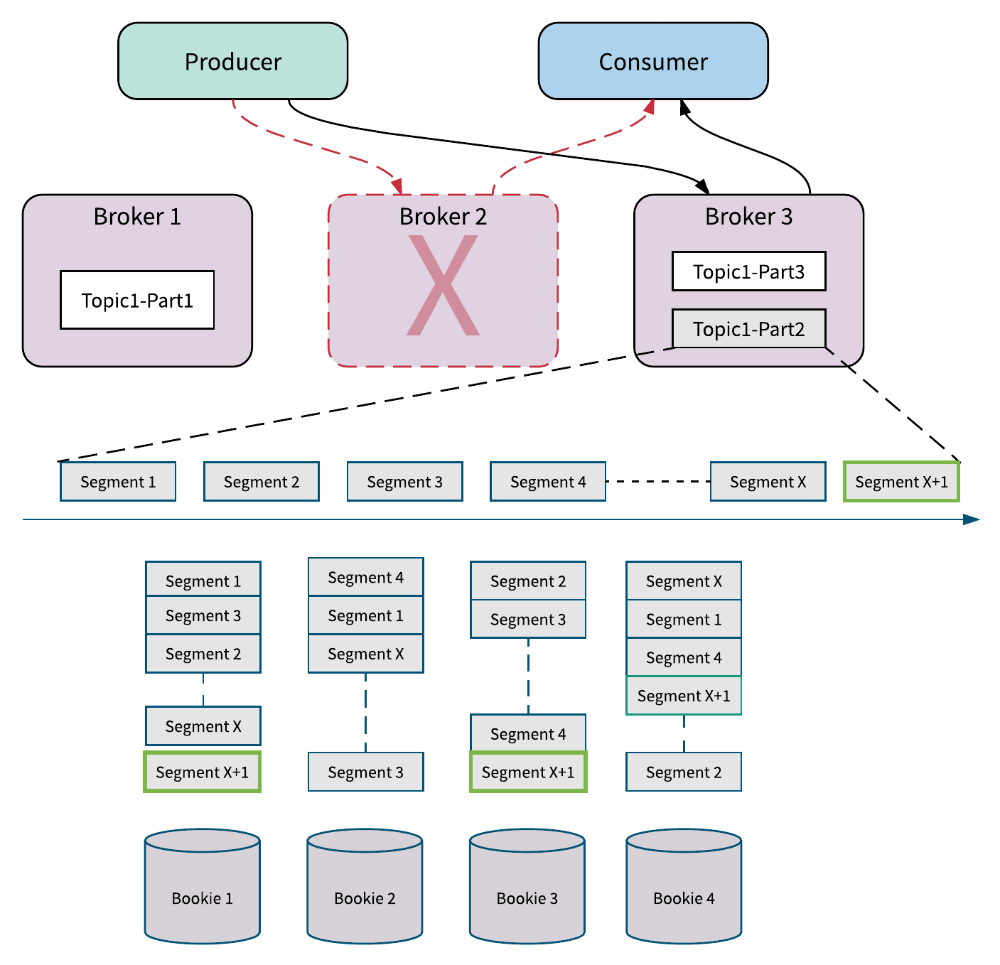
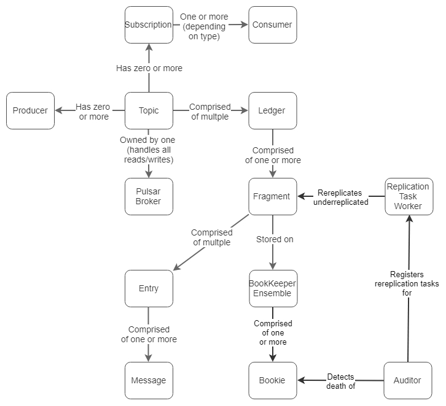

Pulasr简介
Pulsar具有统一灵活的Messaging模型，作者称之为”Producer-Topic-Subscription-Consumer (PTSC)”。每个消息只会在topic中保存一次（由BookKeeper复制到多个节点）。消息可以被订阅topic的多个消费组消费，每个消费组可以自行决定消费方式（独占、共享、故障转移），如下图所示。
Messaging的使用场景大体上分为以下两类：
- Queueing — 消息是无序的，或点对点，或共享。这些使用场景下通常是与无状态应用一起使用。无状态应用程序不关心排序，但需要提供确认/删除单个消息的能力以及易于扩展并行性的能力。这大概占了所有使用场景的70%.
- Streaming — 严格有序的消息或独占的消息。独占消息意味着每个topic/分区只有一个消费者，这通常与有状态应用程序相关联。有状态的应用程序关心顺序和状态，因为顺序和状态将影响处理逻辑的正确性。这类应用还需要消息的重新处理能力，当发生错误时，计算引擎通常会回退并重新处理消息。
Pulsar包含了queueing和streaming的使用场景，并对更常用的queueing场景做了优化:
首先，对于共享型订阅，使用轮询的方式向同一个订阅下的所有消费者发送消息，这意味着消费者数量可以多于分区数。为了增加消息消费的并行能力，除了增加消费者，在其他系统中通常还需要增加分区数量。在这方面。pulsar做得更好，其设计是可伸缩的，它将发布并行性的伸缩与消费并行性分离开来，允许生产者和消费者相互独立地伸缩。
其次，Pulsar通过部署一个有序交付的排他/故障转移订阅来实现streaming.
Pulsar broker是无状态的，每个topic的某个分区都归属于某个broker，该broker称为owner broker。由于是无状态的，因此owner broker故障时只要把分区所有权移交给另外一个broker即可。

Pulsar的高性能是构建在一个高度可扩展的日志存储Apache BookKeeper之上。每个Topic本质上都是基于BookKeeper的分布式日志，也是基于此，Pulsar可以高效地实现其他消息系统中一个不易实现的功能：消息移除。
Pulsar通过游标（cursor）系统来实现高效的消息移除。游标实质上是Pulsar中记录每个订阅的消息消费状态。Pulsar将游标的更新记录在BookKeeper ledger中，这使得Pulsar能够支持高吞吐量的游标更新。
基于游标，Pulsar具备了消息单个确认（也称为选择性确认）的特点，确认后的消息将不会重新发送给消费者。下图说明了单个确认和累积确认之间的区别（灰色框中的消息表示已确认）。图中上半部分为累积确认示例，M12之前（包括M12）的消息被标记为已确认。图中下半部分为单个确认示例。仅确认消息M7和M12，在使用方失败的情况下，将重新发送除M7和M12之外的所有消息。对于独占/故障转移订阅，可以单个确认也可以累计确认；对于共享订阅，只能单个确认。
所有订阅都确认读取了的消息会被删除，如果设置了数据留存策略，则会根据策略判断何时删除已确认的消息。
在发送消息时，还可以设置消息的TTL，消息在未被确认且超过TTL时也会被删除，即在任何消费者读取前就可能被删除。TTL独立应用于每个订阅，因此是逻辑删除（如果是物理删除的话就会影响其他订阅，可能对其他订阅的消费者来说该消息还未过期就被物理删除而无法读取）。
Pulsar架构
Pulsar的架构可以抽象为如下的分层结构。
Layer 1 - Topic, 订阅和游标
第1层是和客户端直接交互的，参考上一节的pulsar简介，此处不再赘述。
Layer 2 - 逻辑存储模型
Pulsar的数据保存在BookKeeper中，每个Topic由一系列segment组成，每个segment对应BookKeeper中的一个ledger，而ledger又由多个fragment组成，每个fragment可以复制到不同的Bookie节点（只要有足够的节点）上，以提供副本冗余和提高读取性能。 fragement是BookKeep中最小的数据分布单元。Pulsar需要记录每个Topic所含的ledgers和fragments，这些元数据保存在ZooKeeper.
对比Kafka和Pulsar，可以发现两者在概念上都是很相近的，包括topic和分区，最大的不同是Kafka以分区为中心的，而Pulsar以segment为中心，segment的粒度更小，因此Pulsar的扩展性更好。
当创建新的topic或发生日志滚动（roll-over）时会创建新的ledger，而日志滚动是由于
- ledger大小超过限制
- ledger的所有权发生变化
当创建新的ledger或fragment所在bookie在写入时发生错误或超时，会创建新的fragment.当broker接收到写入请求，broker会向topic的当前frament的write quorum所在的bookie节点进行写入。
对于读取，broker只需要访问一个Bookie即可，如果使用了读取缓存，则先查找缓存。
BookKeeper有一个重要的功能特性称为Fencing，该特性保证了只有一个写入者（broker）可以写入ledger，其工作原理如下（Qw表示write qurom，Qa表示accept qurom）：
- topic X的当前broker(B1) 被认定为故障或不可用（通过ZooKeeper监控）
- 另外一个broker(B2)把topic X的状态从OPEN更新为IN_RECOVERY
- B2向ledger当前fragment所在的bookies发送fence消息，并等待至少(Qw-Qa)+1个回复。一旦收到这些回复，ledger就认为是被隔离了（fenced）。此时即使原来的broker B1还存活着，也不能向ledger进行写入了，因为无法达成Qa个确认消息（因为至少有(Qw-Qa)+1个bookie确认收到了fence消息，表示至少有一个accept qurom中的bookie不再确认写入）。
- B2询问fragment ensemble中的每个bookie其各自最后确认写入的数据项，并取出最新的数据项ID，然后从该点开始向前（ID更小、时间更早的方向）读取。它要确保从该点起的所有条目（可能尚未被broler B1所确认）都被复制到write quorum中。当不需要再读取和复制数据项时，ledger就完全恢复(recovered)了。
- B2修改ledger的状态为CLOSED
- B2打开一个新的ledger并开始接受写入请求。
这种体系结构的优点在于，leader（broker）是无状态的，BookKeeper的fencing功能可以轻松地解决裂脑问题。没有裂脑，没有分歧，没有数据丢失。
Layer 3 - Bookie物理存储
ledger和fragment是借助ZooKeeper维护的逻辑结构。从物理上讲，数据并不保存在ledger和fragment相对应的文件中。 BookKeeper中存储的实际实现是可拔插的，并且Pulsar默认的存储实现是DbLedgerStorage.
当bookie接收到写入请求时，会首先写入journal文件，这是一种WAL日志，是保证持久性的手段。之后写入到WriteCache中，WriteCache会累积数据写入，并定期排序和刷盘。
写入会根据所属的ledger排序，从而相同的ledger的写入会放在一起，这有利于提高读取性能。如果所有数据按照到达的时间顺序写入磁盘，就无法利用磁盘顺序读取的速度优势了。通过聚合和排序，在ledger级别实现了按时间排序，这正是我们所需要的。
WriteCache中的数据项在写入磁盘文件时还会写入索引项到RocksDB中，每个索引项保存了 (ledgerId, entryId)到(entryLogId, 文件中的偏移)的映射。在读取时先读取WriteCache，再读取ReadCache，最后读取RocksDB中的索引项进而到日志文件中读取到数据项。会读取磁盘文件时还会执行预读并更新读取缓存，以便后续请求更有可能命中缓存。
此外，BookKeeper可以隔离读写的磁盘IO以提高性能，通常 journal文件和日志文件（包括索引文件）放在不同的磁盘上。
Layer 3 - Pulsar Broker 缓存
每个topic都有一个Pulsar broker作为其所有者，所有的读取和写入都经由该broker，这种设计还提供了一个好处：broker可以缓存日志尾部（log tail，日志文件中较新的数据），这样对于尾读取可以不用再向BookKeeper发起读取，避免了一次网络往返和bookie可能触发的一次磁盘读取。而对于追赶读取，会读取历史数据，因此很大一部分读取会进入BookKeeper。
恢复协议（Recovery Protocol）
当有bookie故障时，BookKeeper会启动自动恢复（Auto Recovery）过程。自动恢复运行在多个AutoRecoveryMain进程中，其中一个会被选为Auditor。Auditor的任务是检测故障bookie，然后从ZK中读取完整的ledger列表，并查找故障节点上所有分配的ledgers，对于这些ledgers中的每一个，在ZooKeeper的/underreplicated节点下创建一个重复制任务。
AutoRecoveryMain进程中有一个线程会监听/underreplicated节点并执行复制任务，执行过程为：
- 扫描ledger所有fragment中当前所在bookie所不具有的
- 从其他bookie节点复制这些fragment到当前所在的bookie上，更新ZooKeeper中的ensemble信息，标记这些fragment为已复制

关于潜在数据丢失的一些初步思考
下面介绍和对比下RabbitMQ, Kafka和Pulsar中可能造成数据丢失的情况：
RabbitMQ不管是Ignore或Autoheal模式下都可能发生脑裂，脑裂后丢失分区中未消费的消息就都丢失了。对于Pulsar而言，理论是不可能存在脑裂的。
Kafka设置acks=1且主副本所在broker故障，故障转移到ISR中的某个follower。由于acks=1，所以主副本确认后就返回客户端，但是follower可能还未复制这些数据。对于Pulsar，存储节点不分主从，只要Qw大于等于2，对于一个打开的ledger就不会因为当个节点故障而丢失数据，但是对于关闭的ledger还是有丢失数据的潜在风险。考虑以下场景：
- 场景1（关闭的ledger）： E = 3, Qw =2, Qa = 2. broker发送写入到两个bookies. B1和B2都向broker返回ack，broker再向客户端返回ack。之后ledger关闭，并启用一个新的ledger。如果要发生数据丢失，需要B1和B2都发生故障。如果只有一个节点故障，那么自动恢复机制会介入。（注意如果Qa=1，那么有可能恢复失败，比如最后一条写入只有一个节点ack，而故障的正是这个节点）
- 场景2（打开的ledger）： E = 3, Qw =2, Qa = 1. broker发送写入到两个bookies. B1向broker返回ack，broker不用等待B2的ack而直接向客户端返回ack。如果要发生数据丢失，需要同时满足broker和B1都发生故障且B2没有成功写入。如果只有B1故障，那么仍旧可以把数据写入第2个broker（在一个新的fragment中）。
因此，单点故障造成数据丢失只能发生在Qw=1或Qa=1的情况下，为了保证数据安全性，需要设置Qw >= 2 且 Qa >= 2
- Kafka中拥有leader分区的节点从ZooKeeper中隔离。这会导致Kafka出现短期裂脑。当acks = 1时，leader将继续接受写入，直到发现无法与ZooKeeper对话，此时它将停止接受写入。同时，某个follower被提升为leader。那么当旧的leader 成为follower时，脑裂期间写入旧leader的所有消息都会丢失。当acks = all时，如果所有的follower都落后太多，从ISR中移除，那么ISR只由leader组成。 然后，leader与ZooKeeper隔离，即使已经有follower被提升为leader，旧leader仍然会在短时间内继续接受acks = all消息。那么当旧的leader成为follower时，脑裂期间写入旧leader的所有消息都会丢失。在Pulsar中存储层不会出现脑裂，任何时候只有一个broker可以对topic进行写入。新的broker会使用fencing机制隔离之前的ledger，防止旧的leader故障恢复后再次写入。